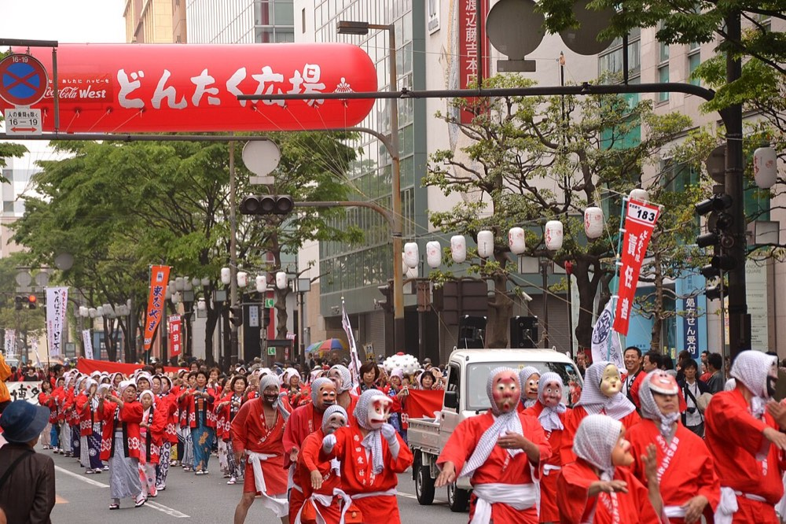
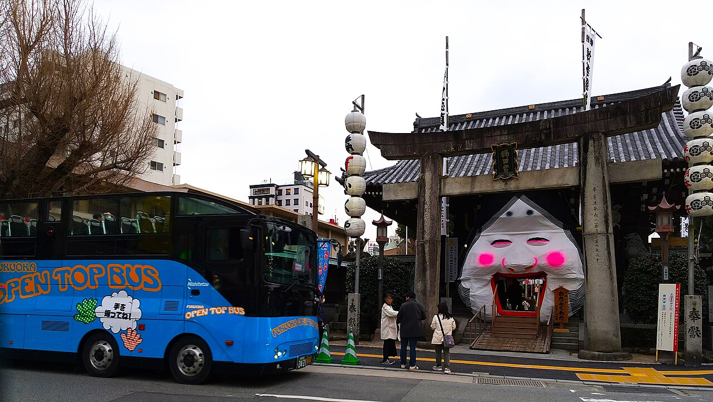
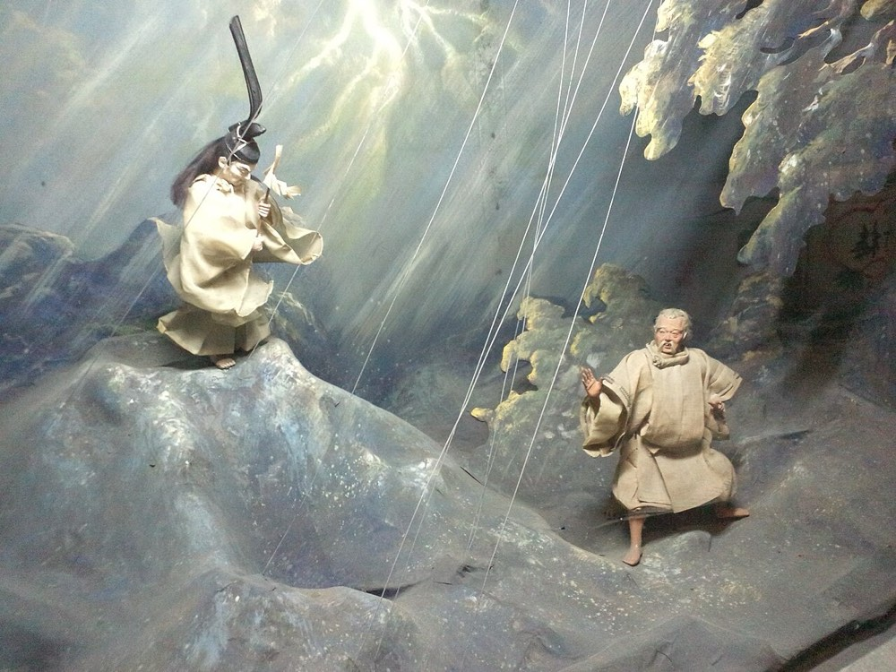
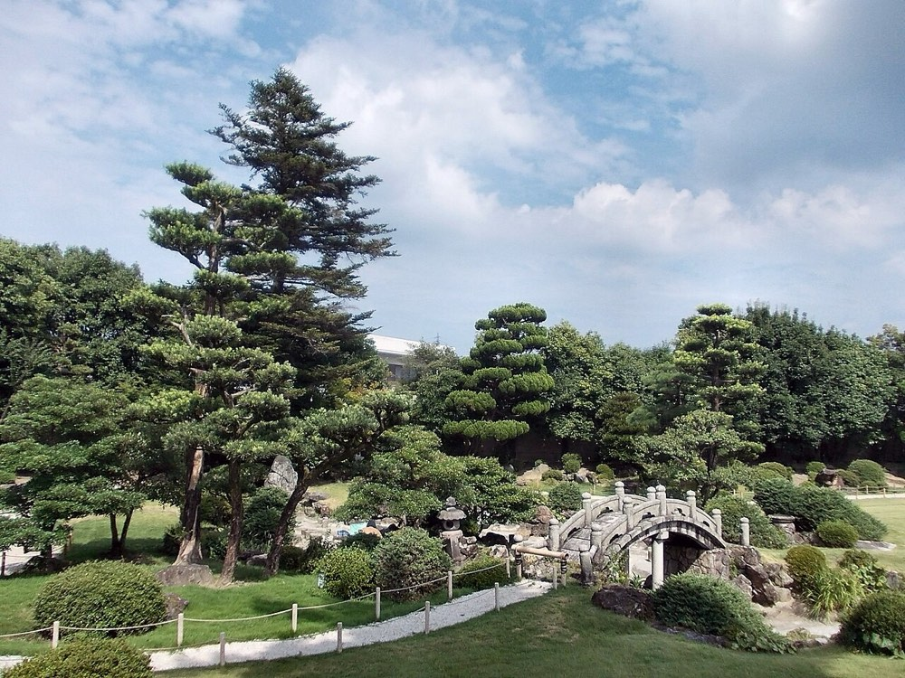
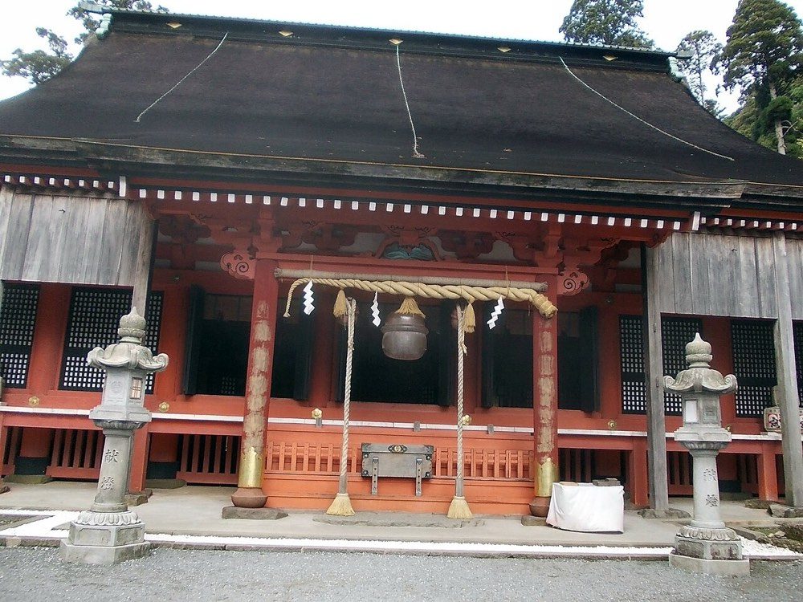
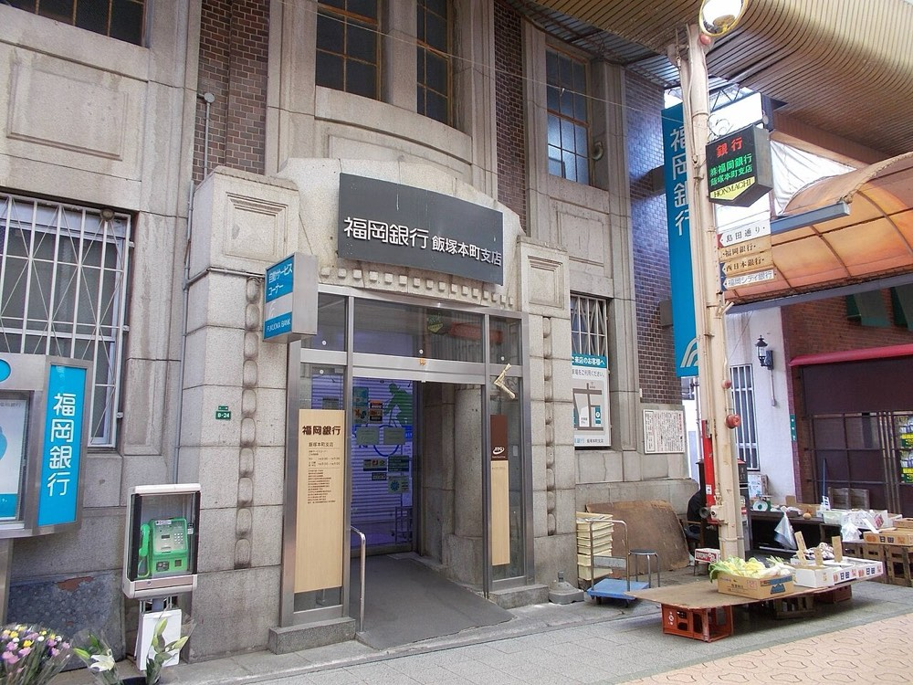

4年 社会 地域で受けつがれてきたもの
Make our question
学習問題をつくろう
みんなが「気になる」と言ったものが、11こあります。どれも、福岡県で昔から受けつがれてきたものです。ぜんぶを深く調べるのはむずかしいので、くらべて、学級でいちばん調べたいものを決めましょう。

4年 社会 地域で受けつがれてきたもの
Make our question
みんなが「気になる」と言ったものが、11こあります。どれも、福岡県で昔から受けつがれてきたものです。ぜんぶを深く調べるのはむずかしいので、くらべて、学級でいちばん調べたいものを決めましょう。
きょうやること
このページは、見て調べるためのページです。書くのは、ノートと紙の付箋です。
Look

写真と説明を見て、気になるものに「気になる」のしるしをつけよう。いくつでもいい。
毎年、人が集まって行うもの。やる人がいないと、つづかない。

写真：フェレス／CC BY-SA 2.1 JP／Wikimedia Commons祭り・行事
「博多どんたく港まつり」。町のあちこちで、おどりやパレードがある。もとになったのは「博多松囃子」という行事。
 写真：Alexwikix／CC0／Wikimedia Commons
写真：Alexwikix／CC0／Wikimedia Commons祭り・行事
7つの流が、山笠をかついで町を走る。町には、かざり山笠も立つ。
祭り・行事
五つの流が、山笠をかついで町を走る。五流の1つが菰田流。
 写真：Muyo／CC BY-SA 3.0／Wikimedia Commons
写真：Muyo／CC BY-SA 3.0／Wikimedia Commons祭り・行事
神輿と山笠が彦山川に入り、水しぶきを上げてもみ合う。
 写真：そらみみ／CC BY-SA 4.0／Wikimedia Commons
写真：そらみみ／CC BY-SA 4.0／Wikimedia Commons祭り・行事
木の玉を、競り子とよばれる人たちがうばい合いながら、筥崎宮の門まで運ぶ。最後に玉をわたした人の地域は、よい実りにめぐまれるといわれる。

写真：Hirho／CC BY-SA 4.0／Wikimedia Commons祭り・行事
豆をまいて、悪いものを追いはらい、福をよぶ。櫛田神社には、大きなおたふくのお面がかざられる。
祭り・行事
遠賀川にうかべた船から、花火を打ち上げる。
人の手で作りつづけているもの。作る人がいないと、つづかない。

写真：Yanajin33／CC BY-SA 3.0／Wikimedia Commonsものづくり
土で形をつくって焼き、色をぬってしあげる人形。
形が残るもの。直したり守ったりする人がいないと、こわれてしまう。

写真：STA3816／CC BY-SA 4.0／Wikimedia Commons建物・場所
炭鉱で成功した伊藤伝右衛門の家。広い庭がある。

写真：STA3816／CC BY-SA 3.0／Wikimedia Commons建物・場所
昔から、山で修行をする人たちが集まった山の神社。

写真：STA3816／CC BY-SA 4.0／Wikimedia Commons建物・場所
本町の通りにある銀行。
どうして気になったのかな。これは「受けつがれてきたもの」と言えるかな。
Research
しるしをつけたものから2つか3つ選んで、リンクで調べよう。わかったことは、ノートに書きます。

Compare

受けつがれてきたものの物差し（例）
ノートに表をかいて、調べたものに○と△をつけよう。お手本の右のページと同じ形です。
気づいたことは、「どちらも〜」「〜は〜だけど、〜は〜」の形で書こう。
Decide
いちばん調べたいものを1つ決めて、自分の考えた学習問題を紙の付箋に書こう。付箋1まいに1つです。
学習問題の形
書いた付箋は、黒板にはります。ノートにも同じことを書いて、赤でかこもう。